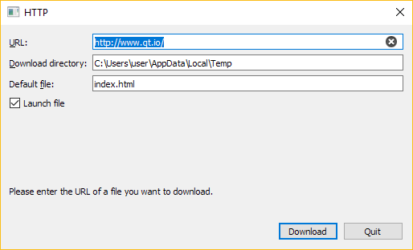

HTTP Example
Demonstrates a simple HTTP client.
This example demonstrates how a simple HTTP client can fetch files from remote hosts.

The main work of this example is done in the HttpWindow class. Thus we will focus on that.
reply.reset(qnam.get(QNetworkRequest(url)));
Using QNetworkAccessManager, we begin the download of a resource as pointed to by the url. If you are unfamiliar with it or the function used, QNetworkAccessManager::get(), or simply want to look into it in more detail, take a look at its documentation and the documentation for QNetworkReply and QNetworkRequest.
connect(reply.get(), &QNetworkReply::finished, this, &HttpWindow::httpFinished); connect(reply.get(), &QIODevice::readyRead, this, &HttpWindow::httpReadyRead); #if QT_CONFIG(ssl) connect(reply.get(), &QNetworkReply::sslErrors, this, &HttpWindow::sslErrors); #endif
Above, we connect some of the reply's signals to slots in the class. These slots will take care of both incoming data and finalizing the download/handling errors.
connect(reply.get(), &QIODevice::readyRead, this, &HttpWindow::httpReadyRead);
As for handling the incoming data, since we don't know the maximum download size of any potential input and we don't want to exhaust the memory of any computer which might run the example program, we handle incoming data in QNetworkReply::readyRead() instead of in QNetworkReply::finished().
void HttpWindow::httpReadyRead() { // This slot gets called every time the QNetworkReply has new data. // We read all of its new data and write it into the file. // That way we use less RAM than when reading it at the finished() // signal of the QNetworkReply if (file) file->write(reply->readAll()); }
Then we write the data to file as it arrives. It is less convenient, but the application will consume less memory at its peak!
connect(reply.get(), &QNetworkReply::sslErrors, this, &HttpWindow::sslErrors);
With the QNetworkReply::sslErrors() signal we can also handle errors that may occur during the TLS handshake when connecting to secure websites (i.e. HTTPS).
void HttpWindow::sslErrors(const QList<QSslError> &errors) { QString errorString; for (const QSslError &error : errors) { if (!errorString.isEmpty()) errorString += '\n'; errorString += error.errorString(); } if (QMessageBox::warning(this, tr("SSL Errors"), tr("One or more SSL errors has occurred:\n%1").arg(errorString), QMessageBox::Ignore | QMessageBox::Abort) == QMessageBox::Ignore) { reply->ignoreSslErrors(); } }
In this example, we show a dialog to the user so that they can choose whether or not to ignore the errors.
QNetworkReply::NetworkError error = reply->error(); const QString &errorString = reply->errorString(); if (error != QNetworkReply::NoError) { QFile::remove(fi.absoluteFilePath()); // For "request aborted" we handle the label and button in cancelDownload() if (!httpRequestAborted) { statusLabel->setText(tr("Download failed:\n%1.").arg(errorString)); downloadButton->setEnabled(true); } return; }
If an error occurs then QNetworkReply will emit the QNetworkReply::errorOccurred() signal, followed by the QNetworkReply::finished() signal. In this example, we only connect to the latter. We handle any potential error(s) in the respective slot by deleting the file we were writing to, and display the error with our status label.
connect(&qnam, &QNetworkAccessManager::authenticationRequired, this, &HttpWindow::slotAuthenticationRequired);
If you connect to a website that uses HTTP authentication, assuming you didn't supply the credentials that should be used ahead of time, you can handle missing credentials when the website requests it. With QNetworkAccessManager, we do this in a slot connected to the signal QNetworkAccessManager::authenticationRequired(). We make this connection once, in the constructor.
void HttpWindow::slotAuthenticationRequired(QNetworkReply *, QAuthenticator *authenticator) { QDialog authenticationDialog; Ui::Dialog ui; ui.setupUi(&authenticationDialog); authenticationDialog.adjustSize(); ui.siteDescription->setText(tr("%1 at %2").arg(authenticator->realm(), url.host())); // Did the URL have information? Fill the UI. // This is only relevant if the URL-supplied credentials were wrong ui.userEdit->setText(url.userName()); ui.passwordEdit->setText(url.password()); if (authenticationDialog.exec() == QDialog::Accepted) { authenticator->setUser(ui.userEdit->text()); authenticator->setPassword(ui.passwordEdit->text()); } }
In this example, we show a dialog where the user can either insert a username and password, or cancel. Canceling causes the request to fail.